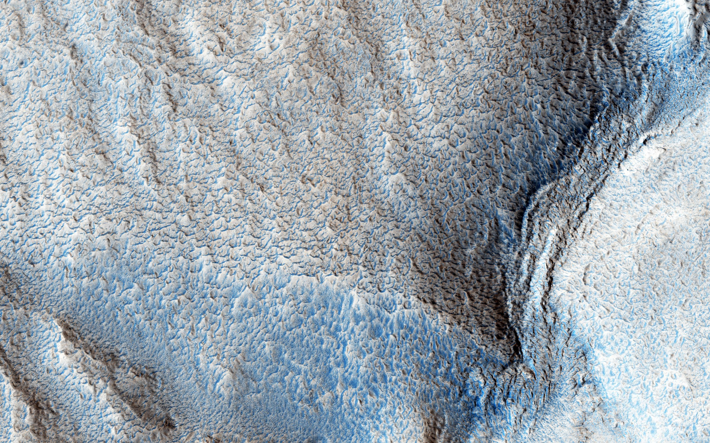
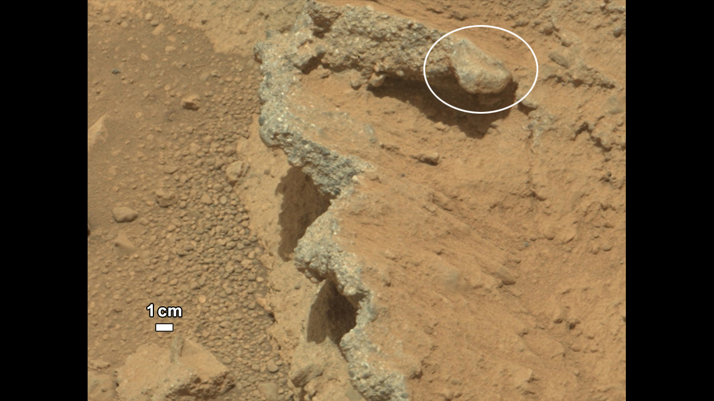
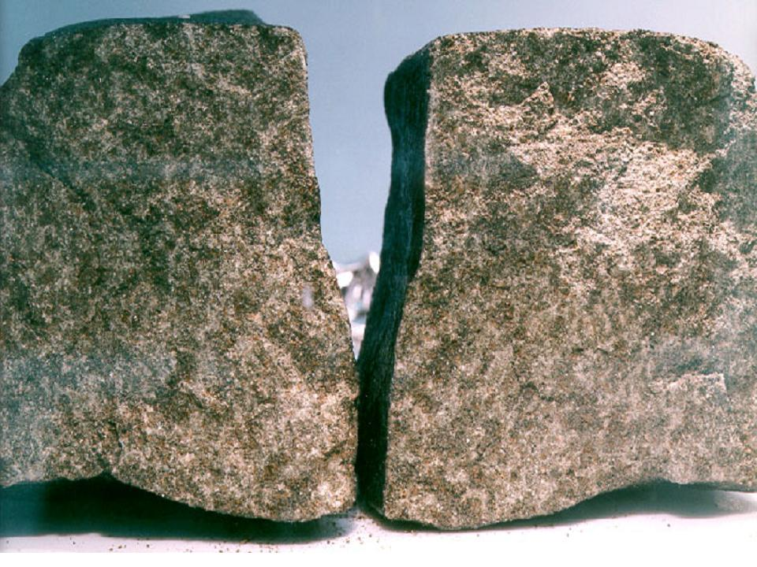
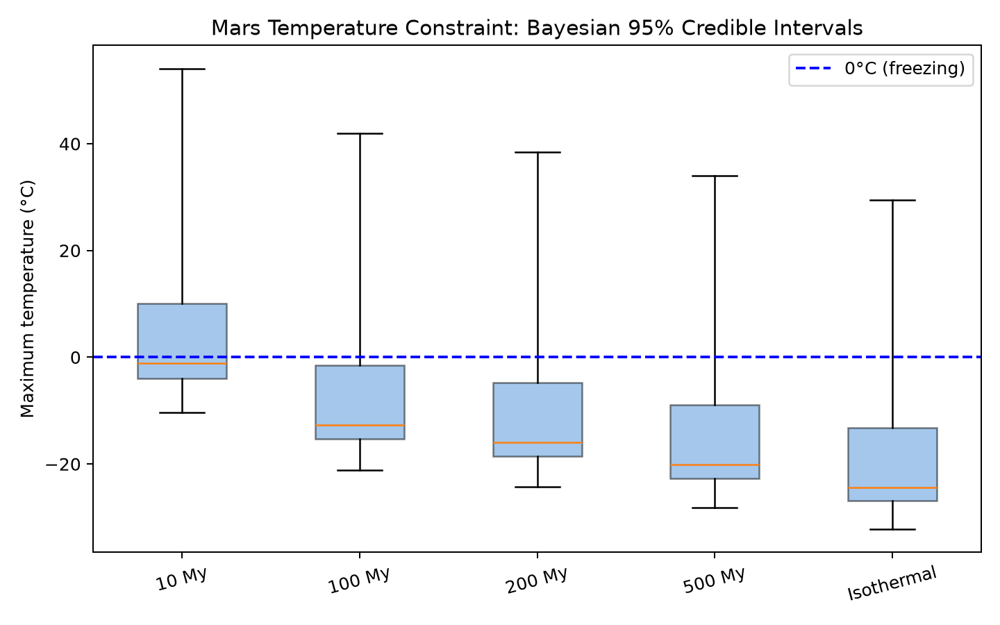

challenging the geologists' cold mars history with bayesian diffusion models
Rocks tell us one story. Cameras tell us another. The disagreement may live inside a two-spike model of how argon escapes a crystal.



{kind=link}
The surface looks water-worked. Canyons branch like drainage networks. Pebbles are rounded as if they once tumbled through a vigorous stream.
But argon trapped in Martian meteorites has been read as a much colder record. Shuster and Weiss argued that the nakhlites had not spent more than ten million years above freezing during roughly the last billion years.
Rocks are not liars, but their story has been misinterpreted by geologists.
Potassium-40 decays into argon-40. Cold feldspar holds that argon inside its lattice; heat gives it enough mobility to diffuse out. An argon date therefore remembers both time and temperature.
A feldspar grain is not one perfect container. Multi-domain diffusion models it as domains with different diffusion lengths. Small domains empty sooner; large domains retain argon longer.
A step-heating experiment releases those domains in sequence. The shape of the release curve constrains the rock's thermal history.
Shuster and Weiss represented the diffusion-domain distribution with two spikes: one low-retentivity domain and one high-retentivity domain. That was a defensible compression in 2005, when fitting a flexible distribution with Bayesian computation was far less tractable. It was also a strong assumption.
MCMC replaces one optimized answer with samples from a distribution of plausible answers. Each chain proposes parameters, runs the diffusion model, compares its prediction with the step-heating data, and spends more time in combinations the data support.
I ran the full inverse problem with BlackJAX on eight H100 GPUs, allowing the diffusion-domain distribution to move rather than fixing two spikes. Propagating that structural uncertainty widens the set of thermal histories the rock permits.

The 95% interval for the warmest 100-million-year episode crosses 0°C. This does not prove that Mars stayed warm. It says the rock does not exclude a long warm episode as confidently as the two-spike interpretation suggested.
The analysis lives in martiandating ↗, the animation source in geochronology ↗, and the working references are Shuster & Weiss, Science (2005) ↗, and Lovera, Richter & Harrison, JGR (1989) ↗.